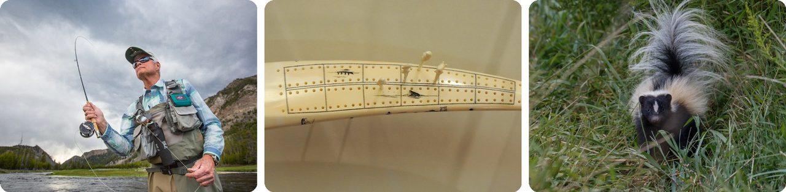
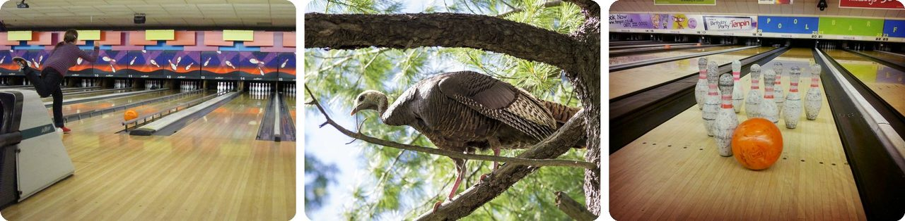
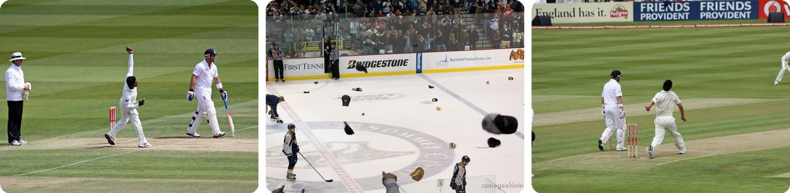
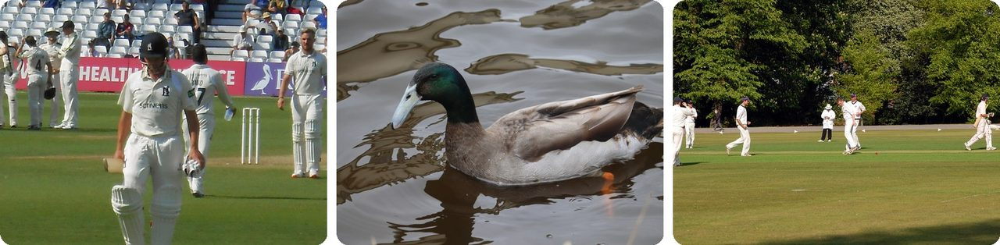
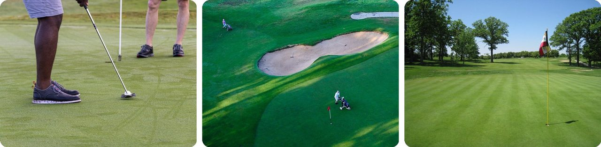
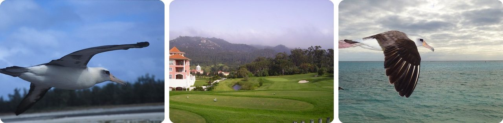
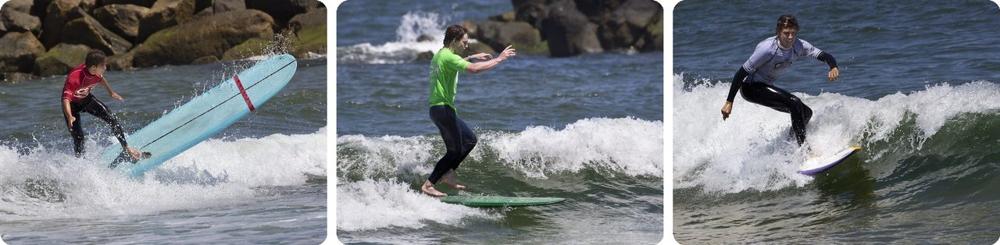
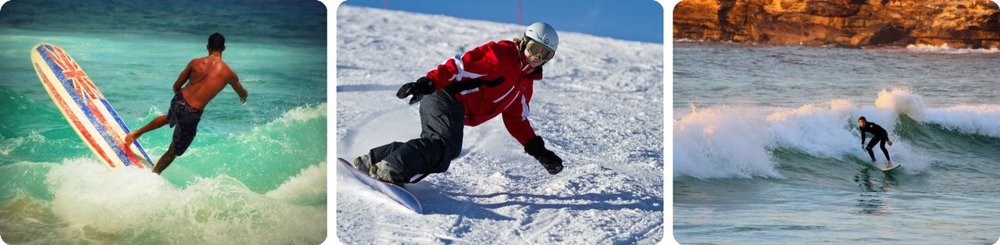
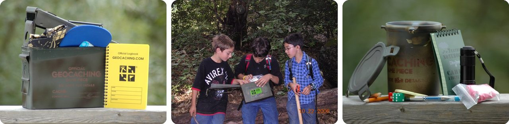
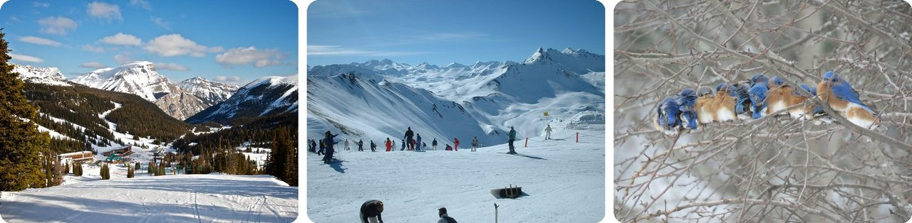

🌍 Top 10 Expressions rigolotes du sport et des loisirs
4 novembre 2026
1. 🎣 Être « skunked », c'est pêcher toute la journée sans rien attraper

Demande à des pêcheurs comment ça s'est passé : s'ils rentrent avec zéro poisson, en anglais ils diront qu'ils se sont fait skunker (« mouffetter »). Aucune mouffette là-dedans. Ça veut juste dire bredouille, complètement.Les joueurs de cartes utilisent le même mot. Au cribbage, on fait avancer des fiches sur une planche jusqu'à 121 points. Si tu y arrives avant que ton adversaire atteigne ne serait-ce que 91, tu l'as « mouffetté », et ta victoire compte double.
Si tu gagnes avant qu'il arrive à 61, c'est une double mouffette.
En gros, se faire skunker, c'est perdre si largement que le score a l'air d'une blague.
2. 🦃 Trois strikes d'affilée au bowling, ça s'appelle une « dinde »

Un strike, c'est faire tomber les 10 quilles avec la première boule. Deux strikes d'affilée, c'est un « double ». Trois d'affilée, c'est une dinde (turkey).L'histoire que racontent les joueurs remonte à la fin des années 1800 et au début des années 1900. Vers Thanksgiving, certaines salles de bowling offraient une dinde vivante à qui faisait trois strikes de suite. Les prix ont disparu, mais le nom est resté.
Et les oiseaux continuent : six strikes d'affilée, c'est une « dinde sauvage », et neuf, une « dinde dorée ». Douze d'affilée, c'est une partie parfaite à 300 points.
Vois ça comme la version bowling de « gagner son dîner ».
3. 🏴 Le « coup du chapeau » est né d'un vrai chapeau en 1858

En 1858, un joueur de cricket anglais, H. H. Stephenson, a éliminé trois batteurs avec trois balles de suite. C'est très difficile. Ses fans ont fait une collecte, et avec l'argent ils lui ont acheté un chapeau.On s'est mis à appeler cet exploit le « hat trick » (le coup du chapeau), et il est apparu pour la première fois dans un journal en 1865. Plus tard, le foot, le hockey et le rugby l'ont emprunté pour tout joueur qui marque trois fois dans un match.
Les fans de hockey sur glace l'ont pris au pied de la lettre. Quand un joueur marque trois buts, le public lance ses propres chapeaux et casquettes sur la glace. Wayne Gretzky a réussi 50 coups du chapeau dans sa carrière, le record de la NHL.
Autrement dit, un coup du chapeau, c'est trois exploits, plus un chapeau.
4. 🦆 Au cricket, être éliminé sans marquer, c'est faire un « canard »

Au cricket, un batteur éliminé sans avoir marqué une seule course a fait un canard (duck). Éliminé dès la toute première balle, c'est un « canard doré ».Le nom est le raccourci de « œuf de canard ». Un zéro ressemble à un œuf : rond et vide. En 1866, un journal racontait que le prince de Galles, le futur roi Édouard VII, était retourné au pavillon royal (le club-house des joueurs) « sur un œuf de canard ».
Le canard le plus célèbre date de 1948. La star australienne Don Bradman n'avait besoin que de 4 courses lors de son dernier match pour finir sa carrière avec une moyenne d'exactement 100. Au lieu de ça, il a été éliminé à zéro, et sa moyenne est restée à 99,94.
C'est comme avoir un gros œuf tout rond sur son bulletin.
5. 🇺🇸 Le « birdie » du golf vient d'un coup chanceux en 1899

Au golf, chaque trou a un « par », le nombre de coups qu'un bon joueur devrait mettre. Finir un trou avec un coup de moins que le par, c'est un birdie (petit oiseau).Le nom vient de l'Atlantic City Country Club, dans le New Jersey. D'après l'histoire, en 1899, un golfeur nommé George Crump a touché un oiseau en plein vol avec son premier coup. Son coup suivant s'est arrêté à quelques pouces du trou. Ses amis se sont écriés que c'était « a bird » (un oiseau), et il a fini un coup sous le par.
Les trois amis ont alors appelé « birdie » chaque trou joué un coup sous le par. Beaucoup de visiteurs jouaient dans ce club, alors le mot s'est répandu dans tous les États-Unis.
En gros, le tout premier birdie avait vraiment un oiseau dedans.
6. 🦅 Au golf, plus le score est rare, plus l'oiseau est grand

Deux coups sous le par, c'est un eagle (aigle), parce qu'un aigle est plus grand qu'un petit oiseau. Trois sous le par, c'est un « albatros », l'un des plus grands oiseaux du monde.Un albatros est si rare que quand Gene Sarazen en a réussi un au Masters de 1935, les journaux l'ont appelé « le coup entendu dans le monde entier ». Ça l'a aidé à gagner le tournoi.
Quatre sous le par, c'est un « condor ». Ça veut dire mettre la balle dans le trou en un seul coup sur un long trou où presque tout le monde en met cinq. En mai 2023, ça n'était arrivé que cinq fois de cette façon, et jamais en tournoi professionnel.
Vois ça comme un tableau d'oiseaux : à chaque marche, l'oiseau grandit et le score devient plus rare.
7. 🏄 Pour faire un « hang ten », le surfeur accroche ses dix orteils au bout de la planche

Le « hang ten » (accrocher les dix) est l'une des figures de surf les plus célèbres. Le surfeur marche jusqu'à la pointe avant de la planche, qu'on appelle le nez, et laisse dépasser ses dix orteils pendant que la vague continue de le pousser.L'équilibre est tellement difficile qu'on ne peut en général le faire que sur un longboard lourd. Une planche courte piquerait du nez et ferait tomber le surfeur.
Le nom est passé à d'autres sports. Au basket, on dit qu'un joueur fait un « hang ten » quand il smashe puis reste suspendu au cercle avec ses dix doigts.
C'est comme se tenir au bout d'un plongeoir… pendant que le plongeoir bouge.
8. 🌊 Rider le pied droit devant, ça s'appelle être « goofy »

Les surfeurs, les skateurs et les snowboardeurs choisissent tous un pied avant. Le pied gauche devant, on dit « regular ». Le pied droit devant, on dit goofy.L'histoire la plus connue renvoie à un dessin animé Disney de 1937, Hawaiian Holiday. Dingo (Goofy en anglais) y essaie le surf le pied droit devant, puis fait une chute spectaculaire.
Mais les spécialistes des mots n'en sont pas si sûrs. Dans le même dessin animé, Dingo surfe aussi le pied gauche devant. La plus ancienne trace dans un livre de surf date de 1962, et l'expression existait peut-être déjà à Hawaï avant.
Autrement dit, c'est comme être gaucher ou droitier, mais avec les pieds.
9. 🧭 Les géocacheurs appellent tous les autres des « moldus »

Le géocaching est une chasse au trésor mondiale. Les joueurs cachent de petites boîtes, publient la position exacte en ligne, et d'autres joueurs utilisent un GPS pour les trouver et signer le carnet à l'intérieur.La toute première a été cachée le 3 mai 2000, dans l'Oregon : un seau noir rempli de livres, de cassettes vidéo et d'une boîte de haricots. En trois jours, deux personnes l'avaient déjà trouvée. Aujourd'hui, il y a plus de trois millions de caches dans le monde.
Les gens qui ne connaissent pas le jeu sont appelés « muggles » (moldus), un mot emprunté aux livres Harry Potter, qui devenaient populaires à la même époque. Si un moldu trouve une cache et la prend ou la casse, on dit qu'elle s'est fait « moldue ».
C'est une partie de cache-cache où presque tout le monde ignore qu'il joue.
10. 🎿 Un « bluebird day », c'est skier sous un ciel bleu après de la neige fraîche

Les skieurs rêvent d'un bluebird day (jour de l'oiseau bleu) : une tempête dépose pendant la nuit une bonne couche de neige fraîche et toute légère, et le lendemain matin, le ciel est parfaitement dégagé et le soleil brille.Les dictionnaires disent que « bluebird day » veut juste dire un jour au ciel bleu sans nuages, et l'expression remonte à 1860. Les skieurs ont ajouté leur propre règle : ça ne compte que si de la neige fraîche est tombée avant. Une journée de soleil sur de la vieille neige dure, c'est juste une journée de soleil.
Malgré le nom, pas besoin de voir d'oiseau bleu. Le nom parle de la couleur du ciel.
C'est la version neige d'une journée de plage parfaite.
Le saviez-vous ?
Cette toute première géocache de l'Oregon n'a pas tenu. Une tondeuse à gazon a fini par détruire le seau et presque tout ce qu'il contenait. Une seule chose a survécu : la boîte de haricots. Les joueurs en ont fait une pièce de jeu voyageuse appelée « Original Can of Beans » (la boîte de haricots originale), et aujourd'hui une plaque marque l'endroit, ce qui en fait l'un de ces nombreux objets du quotidien devenus célèbres par accident.
Crédits photo (Wikimedia Commons)
- #1: Fly fishing on the Madison River (flickr) by YellowstoneNPS, Public domain
- #1: Cribbage board with four counters (flickr) by mark6mauno, CC BY 2.0
- #1: Mephitis mephitis · Warren County, NJ, USA by no rights reserved, CC0
- #2: Strike (flickr) by David Blaikie, CC BY 2.0
- #2: Wild Turkey (flickr) by davejdoe, CC BY 2.0
- #2: Ten pins (flickr) by alexmcc1986, CC BY-SA 2.0
- #3: Lords - June 2011 - E v SL - Rangana Herath Delivers (flickr) by Gareth1953 All Right Now, CC BY 2.0
- #3: Hat Trick (flickr) by somegeekintn, CC BY 2.0
- #3: Edgbaston E v A 2009 - Mitchell Johnson Bowling (flickr) by Gareth1953 All Right Now, CC BY 2.0
- #4: The long walk (flickr) by It's No Game, CC BY 2.0
- #4: Anas platyrhynchos domesticus · Warmond, Zuid-Holland, Netherlands by (c) Michel Langeveld, some rights reserved (CC BY), CC BY
- #4: The Long Walk... (flickr) by It's No Game, CC BY 2.0
- #5: Golfers putting (wordpress) by mdburnette, CC0
- #5: Putting green at the Royal Canberra Golf Club 4.JPG by Neuroxic, CC BY 4.0
- #5: Cantigny Golf Course, Wheaton, Illinois (flickr) by danperry.com, CC BY 2.0
- #6: Laysan albatross flying - DPLA - fc66c7ab13e30453f86f225cfca4db52.jpg by Department of the Interior. U.S. Fish and Wildlife Service. National Conservation Training Center. 10/1997-8888, Public domain
- #6: GOLF DE PENHA LONGA Portugal (flickr) by lele3100, CC BY 2.0
- #6: Flight of the Albatross - Midway Atoll (flickr) by Forest & Kim, CC BY 2.0
- #7: 2016 Steel Pier Surf Classic Virginia Beach Va. longboard surfing (flickr) by watts_photos, CC BY 2.0
- #7: 2016 Steel Pier Surf Classic Virginia Beach Va. longboard surfing (flickr) by watts_photos, CC BY 2.0
- #7: 2016 Steel Pier Surf Classic Virginia Beach Va. longboard surfing (flickr) by watts_photos, CC BY 2.0
- #8: Surfer Wave (stocksnap) by Candace McDaniel, CC0
- #8: snowboard (flickr) by ffo-sesp, CC BY-SA 2.0
- #8: Surfer Wave (stocksnap) by Wyncliffe, CC0
- #9: Geocaching Container - Regular (flickr) by cachemania, CC BY-SA 2.0
- #9: Geocaching (flickr) by Bob n Renee, CC BY 2.0
- #9: Geocaching Container - Small (flickr) by cachemania, CC BY-SA 2.0
- #10: Sunshine Village (flickr) by davidgsteadman, Public domain
- #10: Top of the piste (flickr) by Kevin Hutchinson, CC BY 2.0
- #10: Sialia sialis sialis · 2994 Lake Rd, Benson, VT 05743, USA by (c) Chelsea Carroll, some rights reserved (CC BY), CC BY